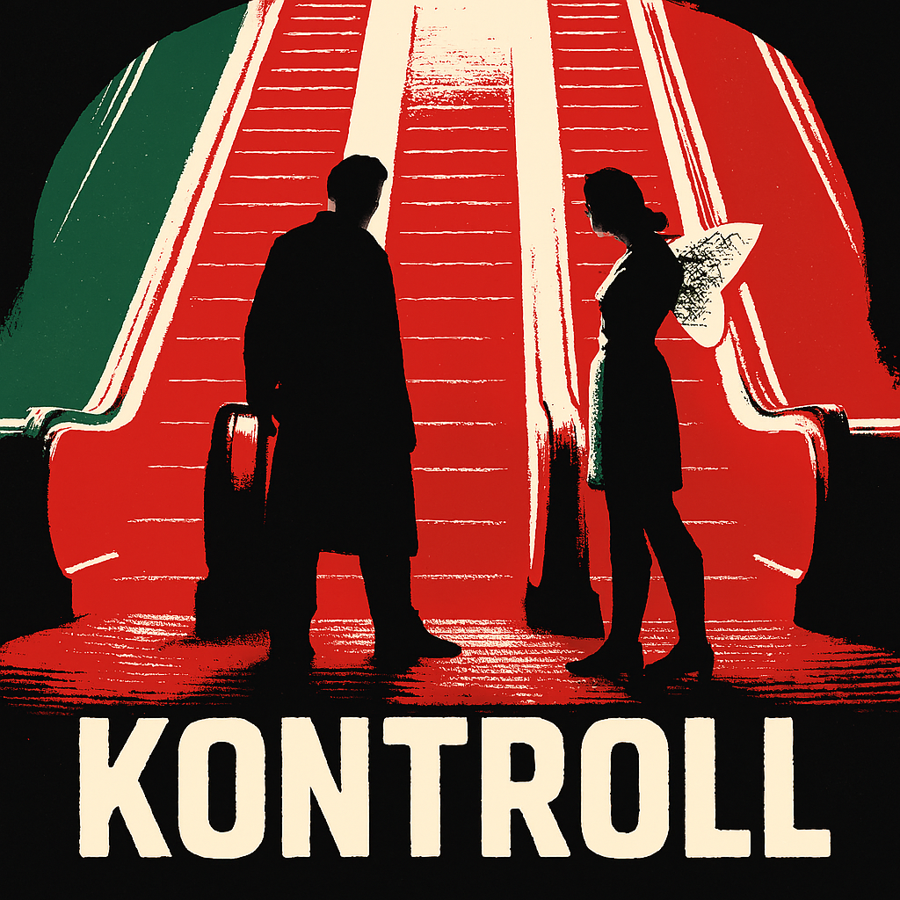
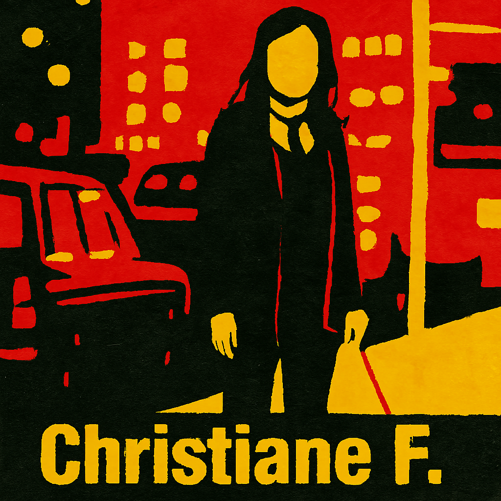

Episodes
Explore the films we’ve covered so far — cult classics, hidden gems, and international cinema worth your time.
 E001
E001
Man Bites Dog
Belgium
A 1992 cult classic black comedy mockumentary following a serial killer through the lens of a novice documentary crew. Their success becomes morally entangled with the violence they capture.

E004Kontroll
Hungary
Set in the purgatory-like Budapest metro, Kontroll follows a crew of ticket inspectors navigating dread, bureaucracy, violence, shame, and redemption.

E005Christiane F.
Germany
A bleak and iconic 1981 biographical drama directed by Uli Edel, featuring music by David Bowie and a raw portrayal of youth, addiction, and alienation.